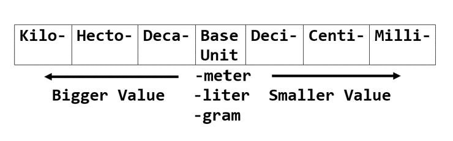

Extend Yourself - Vernier Science: Scientific Method
 Expand on Your First Experiment
Expand on Your First Experiment
Try expanding your hand experiment. What if you held your hand under running water first or wore two mittens on one hand?
Research the Scientific Method
Scientists all over the world follow the same scientific method when conducting experiments. However, this was not always the case. Research "The History of the Scientific Method" and "Francis Bacon" to learn more.
The Richter Scale
The Richter Scale is used to measure the size of earthquakes that consists of numbers one through nine, with ‘one’ being the lowest measure of how powerful a recorded earthquake is. Each number on the scale represents an earthquake that is ten times more powerful than the number before. Visit the United States Geological Survey site to see a list of the most significant earthquakes recorded for any given year. Explore and come up with 5-10 statements that compare the sizes of different quakes. For example, “____quake was 100 times more powerful than _____ quake.”
Research Measurement Conversions
Scientists primarily use the metric system for measurement when doing their work. One of the reasons for this is because it is based on powers of ten, and so it is easier to convert measures in the system. Research how to convert between measures in the metric system using what you know about place value.

Design Your Own Experiment
Now that you have experience using the scientific method, try coming up with your own testable temperature question to answer. Be creative.
Examples:
- How does sunlight affect the temperature of an object?
- How long does it take refrigerated water to reach room temperature?
- Does salt water take longer to cool down than freshwater when ice is added?
Ask your facilitator what other resources you have in the classroom to help give you some ideas. When you have your question, do your experiment. Be sure to follow the scientific method just as you did in the class experiment.